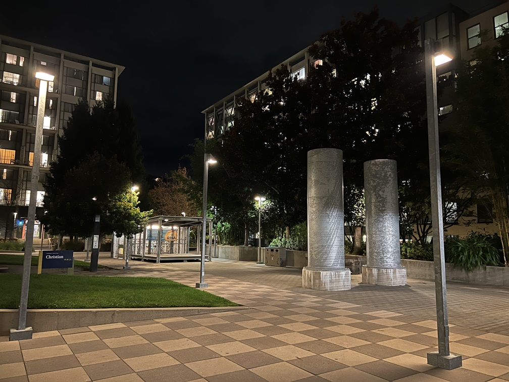

This project is split into two parts with the first one covering how to warp an image, and mosaicing, effectively allowing someone to stitch images together based on correspondence points
I took pictures both indoors and outdoors to get more coverage. I wondered if the difference in lighting within sunlight would cause issues within the stitching
|
|
|
|  | |
|
|
|
The images are selected and taken intentionally so that some elements overlap from picture to picture
Using the same correspondence tool provided by the spec of project 3. I labeled corresponding points from a pair of images using their clicking tool.
The calculation for the homography matrix, is effectively solving b = HA for H.
In this equation, b is the resulting point locations, A is the initial source image point locations, and H is the homography matrix, a 3x3 transforming matrix
Matrices A and b are required to be homogenous matrices, where each column must end with a 1 following the x and y coordinates of a point. As a result of this, when using the homography matrix we must divide all entries by their final column entry.
We can find this homography matrix by using least squares
Using the homography matrix calculated in the previous part, we can essentially warp any coordinates from the original image to its corresponding warped version (placing the point to its position within the perspective of the base image)
We calculate the warped corners by using the homography matrix on the bounds of the original image and offsetting them so that the warped image bounds are within the visible range.
A meshgrid is used to get the output pixel locations, I had trouble using the same approach in the previous project using skimage.draw.polygon, and this proved to be more accurate when using the interpolator.
This process of warping can be used to rectify photos by placing them within the perspective of another image. By manually selecting 4 corner points we can take a slanted object and return it to a rectangular position.

|
Using the previous steps, we can combine images into a singular image called a mosaic (similar to a panorama). This can be done by calculating the size of the resulting image by finding the maximum resolutions of the warped images and adding their offsets based on how much their correspondence points become altered between warps
We can calculate the shape of the combined image by comparing the bounds of the original images and their warped counterparts. By using their center coordinates we can accurately position the images within the canvas.
A slightly modified version of the Gaussian/Laplacian pyramid blending is used, where it is the Gaussian blur is used and we are able to compare high frequencies and low frequencies where the images overlap and we take a weighted average of these values.
When I attempted to use the Laplacian pyramid method for blending, I was met with black artifact lines where the images began overlapping. This method proved to be much more effective.
This blending method is on the elementary side as it assumes that the stitched image will be extending out to the right. It would not work the same if it were a stitch to the left.
|
|

|

|
The last example has noticeable tearing or misalignment. I included this result as I did not take the pictures well and I moved in between them so the images would not align. I was curious to see how the output would look.
It accurately aligns some of the correspondence points (namely the clouds and a building in between both images), but it fails to align the grass and the sidewalk well at all.
The other two mosaics on the other hand came out very well (There are some interesting artifacts with color in the couch example, but it does not appear in the notebook).
We use the provided Harris corner detection algorithm to automatically detect corners within an image.

Using the function by itself leads to a lot of points being marked, with many not being super helpful. We can use additional algorithms to trim these points down to find points that more accurately represent correspondence points between the images, as well as indicative features
By using Adaptive Non-Maximal Suppression (ANMS), we can do this process. This algorithm spaces out the points by using nearest neighbors between point distances using the provided dist2 function. The distance between points follow a threshold inequality to find their associated minimum radius between points which can then be sorted
Every point marked from ANMS is given a 40x40 pixel area around it, labeled as a feature. These areas are then normalized and resized to 8x8. The downsampling allows calculations to be much quicker, even at the cost of accuracy.
These features can then be matched by summing over their squared differences and using nearest-neighbor distance errors. We can calculate the Lowe score for every feature within the descriptors and compare with a feature from the other image. If the score is lower than a certain threshold, then we consider it to be a matched feature
In the RANSAC algorithm, 4 points are sampled randomly from both the inserted initial points, and the destination points. Their homography is then calculated and we can calculate the warped location of the pixel.
We take the distance between the points and compare it to a threshold to determine if it is an inlier or not. Based on the number of points that follow this inequality, we compare it to the previous largest number of points that followed the threshold, and if it exceeds it, we update the set of points
Using the steps above from Harris Corners and further, we can create an auto stitching function that follows the sequence of harris corner detection, ANMS, feature descriptors, feature matching, RANSAC, and then using our original blending function taking in the output of RANSAC
This process essentially auto stitches an image together since we do not have to manually select correspondence points, and the feature selection does it for us.

|
The manual mosaics are on the left, and the auto mosaics are on the right
The first 2 appears extremely comparable among both methods
The last mosaic is immensely better in the auto version, I do not have a clear reason as to why but my assumption is that the auto algorithm manages to pick many more correspondence points for the warping (i.e. individual trees), which allows is to look more accurate, as when I manually selected points, I only selected around 10
Although tedious, reading through the provided paper “Multi-Image Matching using Multi-Scale Oriented Patches” provided a lot of insight on how a computer manages to perceive digital images. The previous projects were mostly processes that were debatably manual, where the this project allowed me to explore methods and algorithms that can automate processes.
The sequence of ANMS -> Feature Descriptors -> Feature Matching was definitely the coolest thing that I learned and experienced this project.